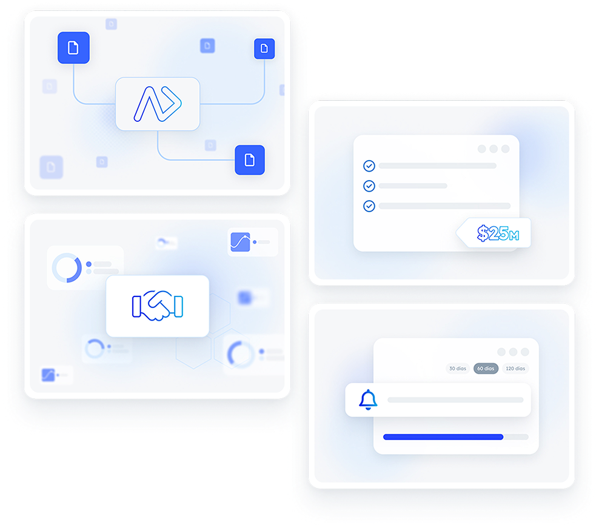
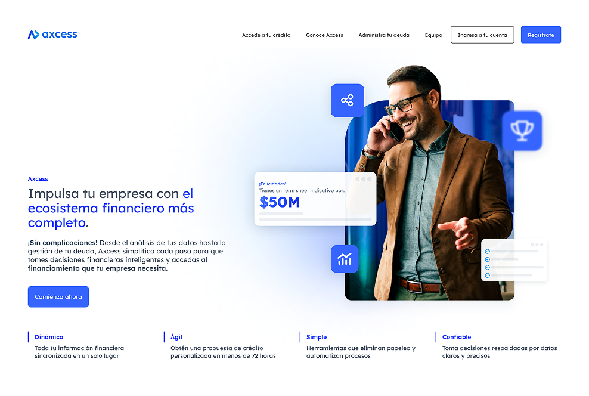

Building Axcess's financial profile platform from scratch
Axcess is Syscap's credit platform for small and medium businesses in Mexico. Co creating tools that surface Credit Bureau and SAT data as actionable financial intelligence, and rebuilding how design, product, and engineering worked together.
Role: Senior Product Designer at Syscap · Stack: Figma + Tailwind CSS + Storybook · Team: 1 designer, cross functional stakeholders
No design process, no handoff standard, no validation loop
When I joined Axcess, design, product, and engineering had no shared workflow. Decisions weren't documented, handoff was ad hoc, and production errors were common. The product itself, a platform letting businesses build a verified financial profile using Credit Bureau and SAT data, had no prior user research and no usability testing gate before development.
My mandate: design the core financial visualization tools and rebuild how the three teams worked together.
No token system · Ad hoc handoff · High revision rate
Deliverables · Storybook · Decision log
Standardized process · Traceable decisions · Reduced production errors
Co creation with business and tech stakeholders to define the core experience
The core challenge wasn't technical. It was conceptual. Credit Bureau and SAT data is dense, jargon heavy, and unfamiliar to most business owners. Before any UI work, I ran co creation sessions with business stakeholders and engineers to define what 'financial profile' meant to the user: not raw data, but a clear picture of credit position and actionable next steps.
These sessions defined the information architecture, the visualization logic, and the constraints the design had to meet: precise enough to trust in a credit context, clear enough for a non financial audience.

Clarity over completeness: surfacing credit intelligence, not raw data
The financial visualization tools had one constraint above all: a business owner with no financial background had to understand their credit position at a glance. Every design decision was filtered through that constraint.
This meant progressive disclosure: summary first, detail on demand. It also meant a strict rule against exposing raw bureau or SAT fields without translation into plain language indicators.
−20% time to market through standardized process
The process change and the product work happened in parallel. Introducing usability testing as a standard gate before development handoff, combined with standardized deliverables and a Tailwind CSS aligned Storybook, eliminated the revision cycles that had been absorbing engineering capacity. Time to market dropped 20% within two quarters of the process rollout.
Three mechanisms that reduced rework
A design process without structure drifts. I built three lightweight mechanisms to keep design, product, and engineering aligned as the product grew. Every standard was documented in line with financial regulation, including KYC and AML flows, and reviewed in workshops with product, engineering, and legal.
Every handoff ships with the same artifacts
Wireframes, annotated specs, Storybook component documentation, and a decision log entry, every time. No negotiation on format. Engineering knows exactly what to expect before the handoff meeting.
Nothing ships without user validation
Usability testing was introduced as a mandatory gate before development handoff. Tests were lightweight, 3–5 sessions per feature, but consistent. Design decisions became evidence based, not opinion based.
Decisions documented, not debated twice
Every significant design decision was logged with context, tradeoffs, and resolution. Onboarding new stakeholders stopped requiring the same conversation three times.
Storybook as the single source of truth between design and engineering
The handoff standard centered on Storybook: every component documented with Tailwind CSS aligned naming, interactive states, and usage notes. This made the design system a living reference, not a static spec that drifted from production.
{{ c.body }}
What the process and product delivered
The process work and the product work reinforced each other. A clearer handoff standard meant engineering trusted the specs. Usability testing meant fewer surprises in QA. The financial profile tools shipped faster and required less rework than anything the team had built before.
